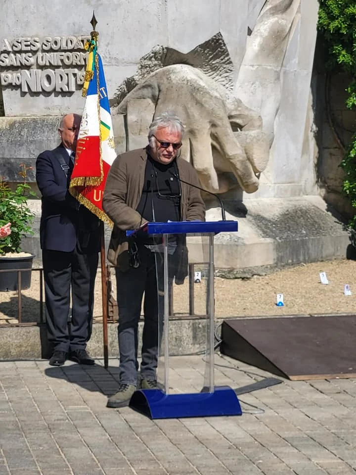
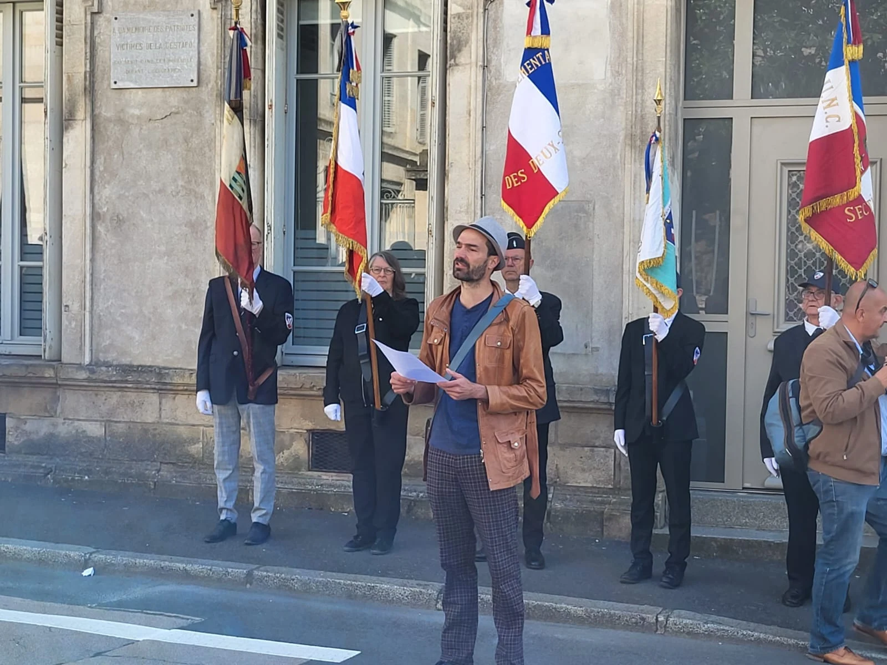
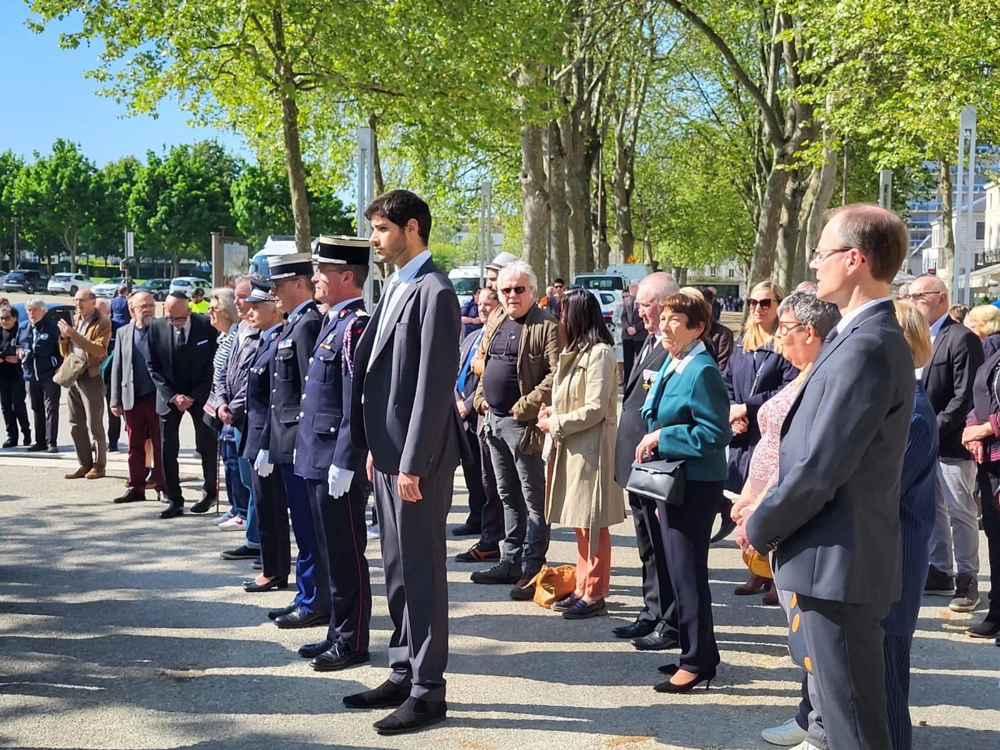

Compte rendu relayé
À Niort, hommage aux victimes et aux héros de la déportation
Date indiquée par Facebook · 30 avril 2023
Repères éditoriaux
Nous avons relayé la publication de l’ADIRP 79 sur la cérémonie du 30 avril. La vidéo du même hommage est également conservée.
Texte conservé avec la publication
Ce 30 avril à Niort, célébration pour la journée nationale du souvenir des victimes et des héros de la déportation. À tous ceux et celles qui sont partis pour ne jamais revenir … Devoir et travail de mémoire…
ADIRP 79



Sources
Archive rouge · export Facebook · AR-0002-FB-01669
À lire aussi · La cérémonie du souvenir de la déportation à Niort, en image